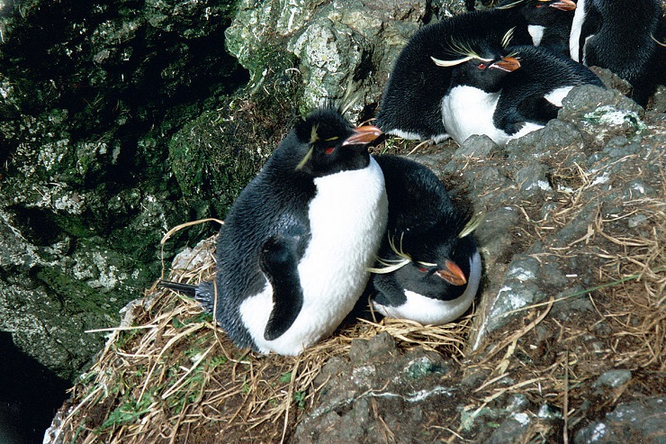
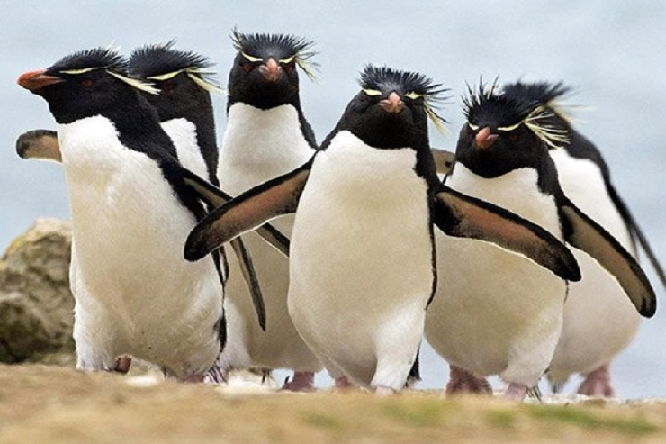
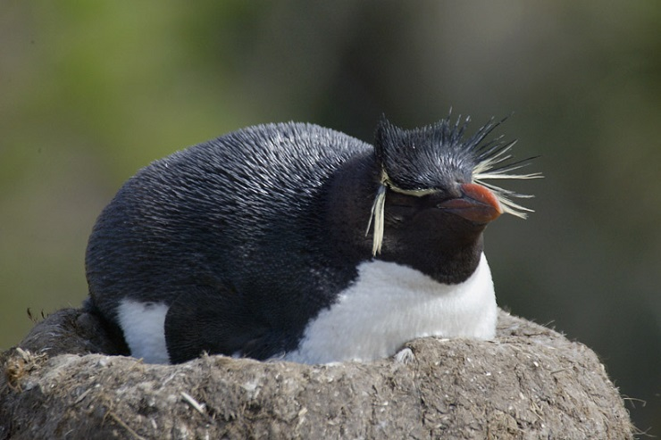

동물 보호 단체 황제펭귄 킹펭귄 아델리펭귄 훔볼트펭귄 마카로니펭귄 바위뛰기펭귄 쇠푸른펭귄 노란눈펭귄 바위뛰기펭귄 바위 사이사이를 뛰어다니며 행동하는 특성에서 이름이 붙여진 펭귄입니다. 키:45~58cm 몸무게: 2.3~4kg 분포:인도양과 태평양의 섬 중에서 남극해와 가까운 곳, 남아메리카의 남쪽 해안 등지 머리에 특유의 노란 깃털 장식이 있는 펭귄으로, 머리 뒤부터 시작하여 눈 위를 가로질러 목덜미 쪽으로 뻗어 있는 노란 깃털 장식과 머리 윗면에도 검은색 장식 깃털이 있는 것이 특징입니다. 머리·목·날개·등·꼬리·날개 바깥 면은 검은빛이 나는 짙은 회색이, 가슴·배는 흰색입니다. 날개 안쪽 면은 흰색이고 가장자리에는 검은색 테두리가 넓게 퍼져있고 부리는 어두운 주황색이며 눈은 붉은색입니다. 수면과 비슷한 높이의 해변부터 바위 벼랑 꼭대기까지 해안의 다양한 환경에서 무리를 이루어 생활합니다. 대부분의 펭귄들이 미끄러지기(슬라이딩)나 날개를 이용하여 서투르게 장애물을 넘는 것과 달리 발을 이용해 점프하여 바위나 틈을 뛰어 넘습니다. 번식기는 9월에서 11월 사이로 한 번에 2개의 알을 낳는다. 부화기간은 약 35일이며 이때 보통 하나의 알만 품습니다.   
바위 사이사이를 뛰어다니며 행동하는 특성에서 이름이 붙여진 펭귄입니다.
키:45~58cm 몸무게: 2.3~4kg 분포:인도양과 태평양의 섬 중에서 남극해와 가까운 곳, 남아메리카의 남쪽 해안 등지
머리에 특유의 노란 깃털 장식이 있는 펭귄으로, 머리 뒤부터 시작하여 눈 위를 가로질러 목덜미 쪽으로 뻗어 있는 노란 깃털 장식과 머리 윗면에도 검은색 장식 깃털이 있는 것이 특징입니다. 머리·목·날개·등·꼬리·날개 바깥 면은 검은빛이 나는 짙은 회색이, 가슴·배는 흰색입니다. 날개 안쪽 면은 흰색이고 가장자리에는 검은색 테두리가 넓게 퍼져있고 부리는 어두운 주황색이며 눈은 붉은색입니다. 수면과 비슷한 높이의 해변부터 바위 벼랑 꼭대기까지 해안의 다양한 환경에서 무리를 이루어 생활합니다. 대부분의 펭귄들이 미끄러지기(슬라이딩)나 날개를 이용하여 서투르게 장애물을 넘는 것과 달리 발을 이용해 점프하여 바위나 틈을 뛰어 넘습니다. 번식기는 9월에서 11월 사이로 한 번에 2개의 알을 낳는다. 부화기간은 약 35일이며 이때 보통 하나의 알만 품습니다.